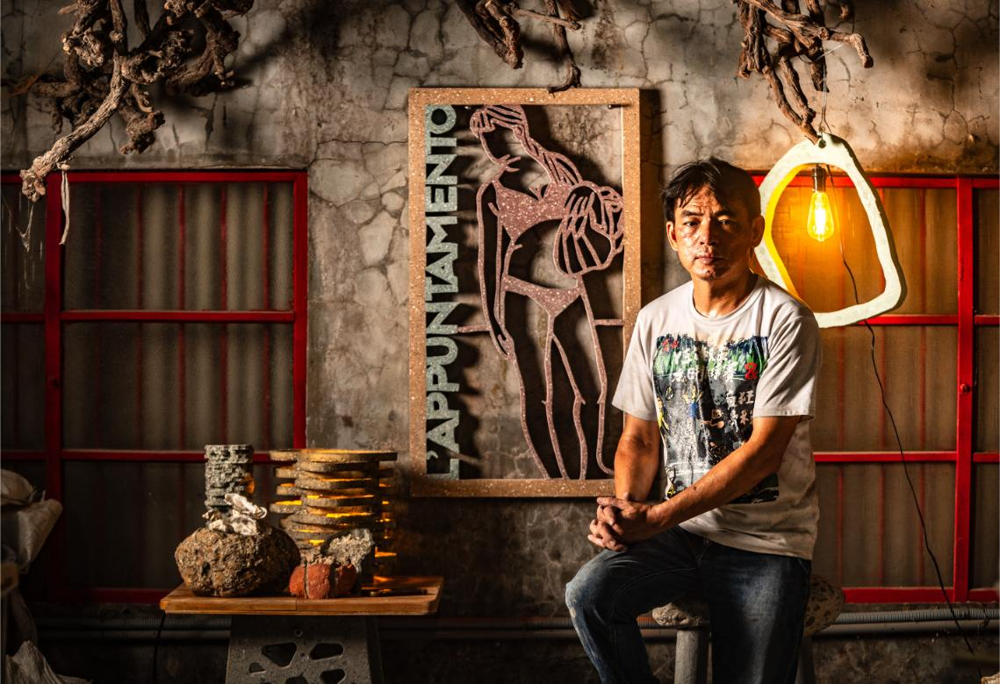
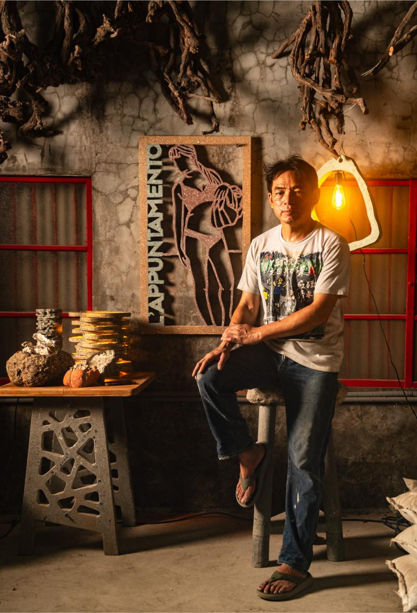
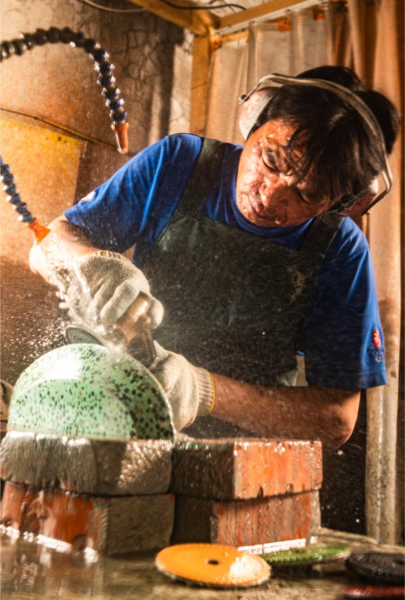
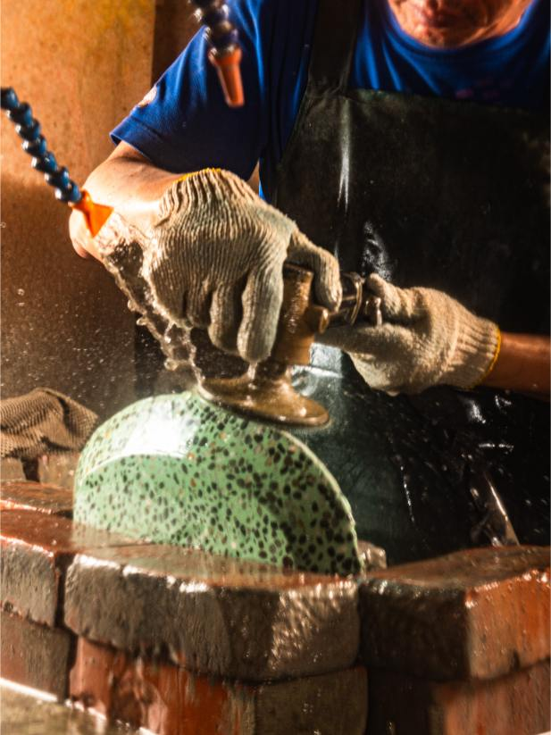
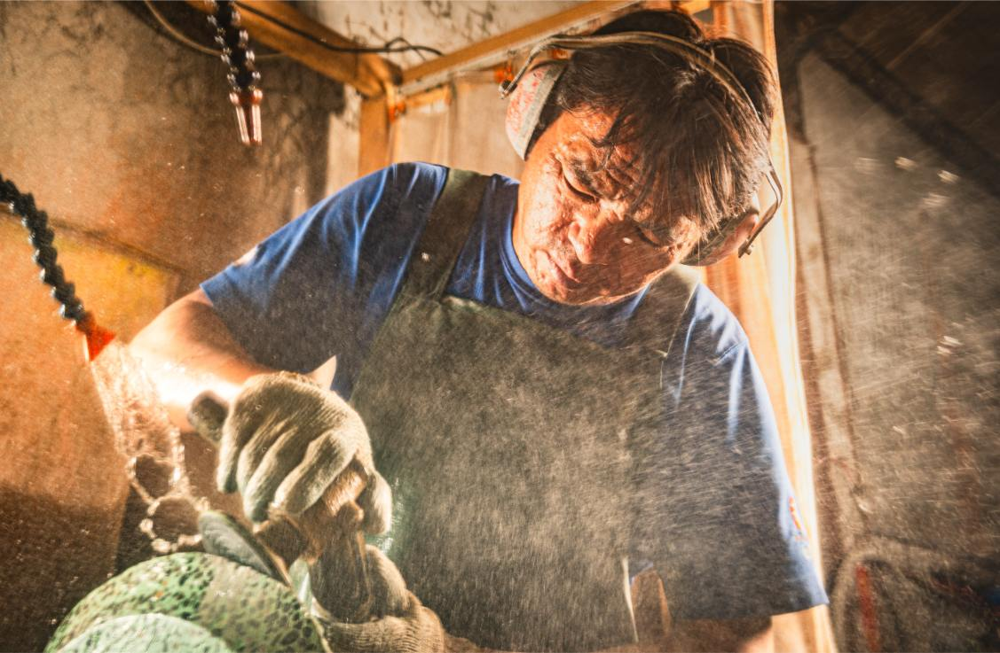

About Concredia.Lab
把廢料，
磨成時間。
士敏文品不是把水泥做得像家具，而是把土木工程、材料記憶與手作工序放進生活物件裡。每一件作品，都從台灣土地上被遺忘的廢料開始。
Founder · 創辦人
土木博士，
也是每天進現場的職人。
李俊憲以土木工程研究為底，長年投入再生混凝土與 EAC 骨料裸露工法。那些原本只能被清運、填埋或降級使用的材料，在他的工作室裡重新被分類、澆鑄、養護與水磨。
作品不是大量複製的商品，而是一段材料被留下來的方式。廢磚、玻璃、爐石、蚵殼與地方廢料，在混凝土表面形成只屬於那一件作品的紋理。

Rovi Lee · Founder
Concrete as a Medium for Life.

Water Grinding Process
Process · 工序
水磨不是表面處理，
是把材料的內部打開。
每一次水磨，都是讓骨料重新露出來的過程。水流帶走粉塵，也讓混凝土裡的廢磚、玻璃與礦物顆粒逐漸清晰。
這些不是裝飾，而是材料本身的履歷。它們曾經在某個工地、某段路、某個地方存在，現在以另一種形式回到日常生活。



Studio · Changhua
Team · 團隊介紹
Concredia.Lab 士敏文品
Circular Design · Concrete Craft · ESG Material Story
我們的團隊圍繞著一件事：讓廢棄物不要只停留在報表裡，而是成為能被看見、被使用、被珍惜的作品。
從材料實驗、模具製作、澆鑄養護、水磨到企業 ESG 文件整理，士敏文品把工藝和永續敘事放在同一條生產線上。
這是一間小型工作室，但它處理的是很大的問題：城市如何面對自己的廢料，企業如何讓永續不只是口號，日常物件如何承載地方與時間。
Contact · 合作洽詢